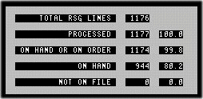

| rsg |
| home page |
|
Earnings dates and conference call data provided by StreetEvents, a service of CCBN. . Advanced Search Select Section Home E-mail Newsletters Investment Newsletters People Tracker Portfolio Tracker Business -Companies -Global -People -Small Business Technology -Communications -E-Commerce -Future Tech -New Media -Personal Tech Markets -Economy -IPOs -Stocks -Venture Capital Work -Careers -Entrepreneurs -Executive Compensation -Management Lists -Companies --Forbes 500s --Forbes Global 500 --200 Best Small Cos. 00 Institutional data based on company's quarterly reporting,insiders on a 6-month rolling basis. Mutual Fund data provided by Morningstar Forbes 40 Index powered by Telemet. |
| RSG deployed one of the first Microsoft Site Server (Commerce Edition) implementation in the US. Furthermore, the developer stopped working and only two months to launch. RSG drafted business cases, and drew upon years of business experience to create a site with great customer experience. RSG immediately staffed the project, re-wrote the code, restructured the databases, and redesigned the site optimizing for customer-oriented look and feel. The site won Gartner Group's INTERNET BEST PRACTICES AWARD, for usability principles including clear intuitive goals and objectives. |
|  |